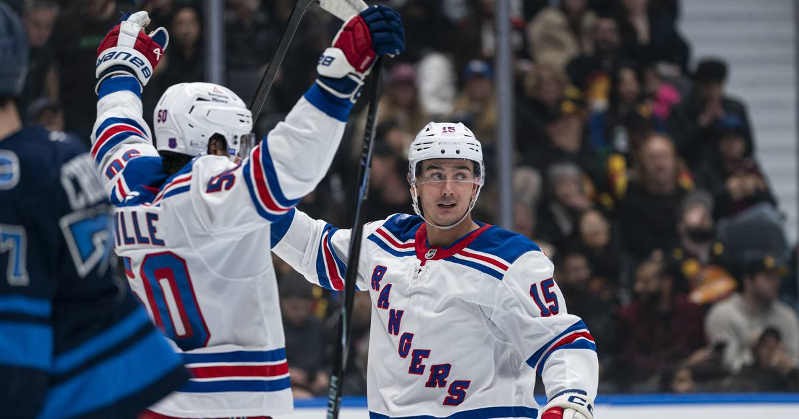

Glenn Gawdin scores his first two NHL goals in Rangers' win over Canucks
Glenn Gawdin waited nearly six years and 15 NHL games for his first goal. He got it in his hometown, in front of family and friends — then scored again 3:10 later as the Rangers beat the Canucks 5-1.

Disclosure: this post contains affiliate links. I earn a commission on qualifying purchases.
The night
Glenn Gawdin waited almost six years for his first NHL goal. Then he scored two in about three minutes.
The 29-year-old from Richmond, British Columbia, found the net twice in the second period of the New York Rangers' 5-1 win over the Vancouver Canucks at Rogers Arena on Friday night — in his first-ever game in Vancouver, in the arena he grew up less than 30 minutes from, with 10 to 12 family and friends in the stands.
Both goals came as part of a four-goal middle frame that turned a 1-1 game into a rout. Oliver Bjorkstrand opened the scoring in the period on the power play at 8:21, then Gawdin struck at 13:00 — Canucks goalie Leevi Merilainen's clearing attempt bounced off former Ranger Filip Chytil and straight onto Gawdin's stick for a quick blocker-side shot. Alexis Lafrenière made it 4-1 at 15:14, and Gawdin finished the burst at 16:10, deflecting a Vladislav Gavrikov point shot in off his skate from the right edge of the crease.
"There's a lot that goes through your mind over the years and credit to the circle around me, credit to my wife, they push me when I need it," Gawdin said afterward. "The success tonight, I think they have an equal part in that, so it was a special night."
"You just got to get lucky sometimes," he added. "That was a fortunate bounce on the first one, and then the second one, went to the net and usually good things happen, and yeah, off my foot and in."
The long road
The wait is the story here. Gawdin made his NHL debut with the Calgary Flames on Feb. 20, 2021, and Friday was just his 15th NHL game since — spread across three organizations and nearly six years, mostly spent grinding in the American Hockey League. He had been playing for the Hartford Wolf Pack, where he had five goals and nine assists through 16 games, when the Rangers called him up earlier in the week to fill a fourth-line center need with Joe Veleno on long-term injured reserve.
It was his second game with New York, and his first big-league chance in just over two and a half years.
The milestone also puts him in rare Rangers company. He became the third-oldest Rangers player at the time of his first NHL goal, after Alex Gray (30 years, 154 days on Nov. 22, 1927) and Bill Cook (30 years, 38 days on Nov. 16, 1926) — a list that had stood untouched for nearly a century.
How the game went
1st, 12:13: Elias Pettersson (VAN) — 1-0 Canucks
1st, 18:47: Gabe Perreault (NYR) — 1-1
2nd, 8:21: Oliver Bjorkstrand (NYR, PP) — 2-1 Rangers
2nd, 13:00: Glenn Gawdin (NYR) — 3-1 Rangers
2nd, 15:14: Alexis Lafrenière (NYR) — 4-1 Rangers
2nd, 16:10: Glenn Gawdin (NYR) — 5-1 Rangers
Vancouver actually started well. Pettersson opened the scoring by deflecting a Zeev Buium point shot, his fifth goal of the season and his first at 5-on-5 since Jan. 13, ending a 56-game drought. Perreault answered late in the first, finishing a feed from Lafrenière behind the net, and the Rangers never looked back.
Lafrenière and Perreault each finished with a goal and an assist, and J.T. Miller had two assists. Dylan Garand made 27 saves for New York — a homecoming of his own, as the Victoria native hadn't played in Vancouver since he was 19, with an estimated 50 family and friends in attendance. "It's pretty special," Garand said. "I haven't played here since I was 19 and my whole pro career, a lot of people that support me have never seen me play, so for them to come down and watch me play tonight, and great for us to deliver a big win, it was a cool night for sure."
The win closed out a four-game road trip at 3-1-0 for the Rangers, who have won five of their past six and sit at 12-8-1. "It's a great trip," coach Mike Sullivan said. "Obviously, when you can take three out of four out here, we're going into some pretty tough buildings with the travel, it's a big challenge, and I thought our guys competed hard."
The other side
For Vancouver, the loss was the seventh straight (0-7-0), dropping the Canucks to 3-17-1 and 1-16-1 over their past 18 games. "We keep talking about the same things, that we've got to do for 60 minutes," Pettersson said. "We started good this game, and we've got to follow up in the second period with a good one, and we didn't."
One bright spot: Brock Boeser recorded an assist to reach 500 career points (233 goals, 267 assists) in his 650th game, becoming the eighth player to hit the milestone for Vancouver. He also carries a six-game point streak.
Watch
Source: Rangers vs. Canucks | NHL Highlights | Nov 13, 2026 — NHL. The official full-game highlights, including Pettersson's opener and both of Gawdin's milestone goals in the four-goal second period.
Gear up: Fanatics